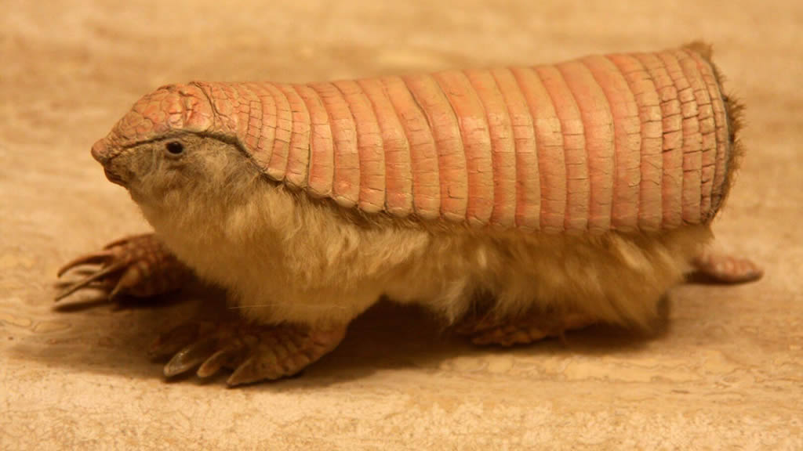
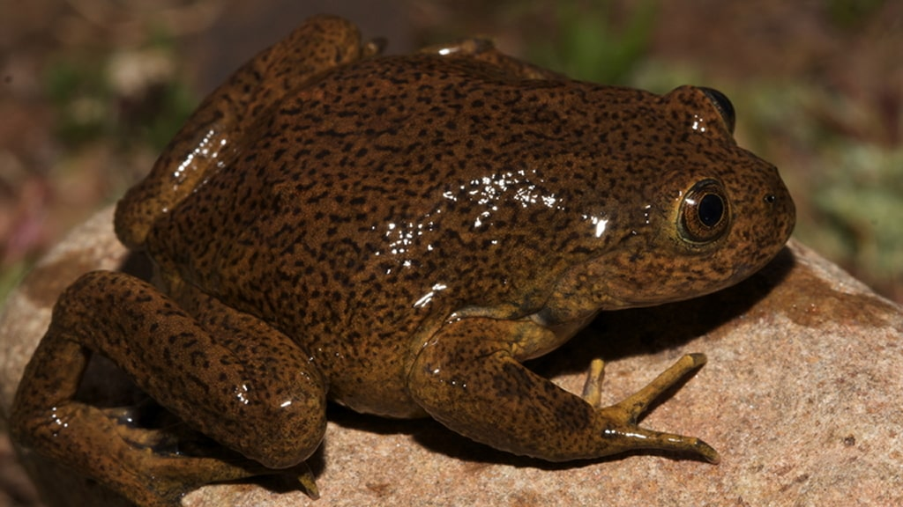
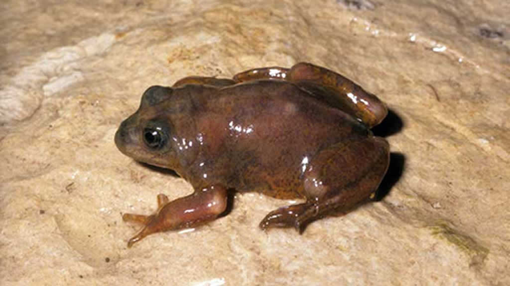

Animales de Argentina en peligro de extinción
Lista de Animales
- Huemul
- Aguará Guazú
- Oso Hormiguero
- Pingüino de Magallanes
- Ciervo de los pantanos
- Suri cordillerano
- Cóndor andino
- Venado de las pampas
- Yaguareté
- Tatú carreta
- Carayá-Pita
- Flamenco andino
- Pecarí del chaco
- Ballena franca austral
- Pichiciego
- Mono caí o capuchino
- Chinchilla de cola larga
- Tapir
- Guacamayo verde
- Huillín
- Cauquén colorado
- Mara
- Rana telmatobius atacamensis
- Ranita de Laguna Blanca
Argentina es uno de los países con mayor biodiversidad del mundo, con un extenso territorio, climas y paisajes de todo tipo. Su fauna es muy variada, aunque en la actualidad se encuentra severamente afectada por la falta de conservación. Ya son más de 500 especies las que están en peligro de extinción. Aquí, algunas de las especies más amenazadas.
Huemul
 Este ciervo robusto, con grandes orejas y astas en los machos, es una de las especies típicas de la zona cordillerana de la Patagonia. El huemul fue víctima de la caza furtiva, ataques de otras especies
y enfermedades. Además, los incendios forestales de las últimas décadas en su hábitat redujeron considerablemente su población. Se calcula que no hay más de 700 ejemplares, y se encuentran dispersos entre áreas aisladas y fragmentadas
de los bosques de lenga de la Patagonia andina y la estepa patagónica.
Este ciervo robusto, con grandes orejas y astas en los machos, es una de las especies típicas de la zona cordillerana de la Patagonia. El huemul fue víctima de la caza furtiva, ataques de otras especies
y enfermedades. Además, los incendios forestales de las últimas décadas en su hábitat redujeron considerablemente su población. Se calcula que no hay más de 700 ejemplares, y se encuentran dispersos entre áreas aisladas y fragmentadas
de los bosques de lenga de la Patagonia andina y la estepa patagónica.
Aguará Guazú
 El avance del hombre sobre su ecosistema hizo que se redujera considerablemente el número de ejemplares de este zorro, el más grande de Sudamérica. Vive en las provincias de Formosa, Chaco, Santa
Fe y Corrientes, al noreste del país, en zonas inundables. Este zorro de pelaje largo y hermoso color rojo, encarna la leyenda del lobizón para los criollos aunque en la mitología toba es un ser protector y padre de todos los perros. En
guaraní, aguará guazú significa zorro grande.
El avance del hombre sobre su ecosistema hizo que se redujera considerablemente el número de ejemplares de este zorro, el más grande de Sudamérica. Vive en las provincias de Formosa, Chaco, Santa
Fe y Corrientes, al noreste del país, en zonas inundables. Este zorro de pelaje largo y hermoso color rojo, encarna la leyenda del lobizón para los criollos aunque en la mitología toba es un ser protector y padre de todos los perros. En
guaraní, aguará guazú significa zorro grande.
Oso Hormiguero gigante
 El oso hormiguero gigante o «yurumí» es uno de los dos grandes devoradores de hormigas que viven en la Argentina. Se lo encuentra en la selva misionera, Formosa, El impenetrable y otras áreas
chaqueñas, el este de Salta, el noreste de Santiago del Estero y, probablemente, norte de Corrientes. Se estima que su baja población se debe a que no posee grandes posibilidades de reproducción, y además es un animal muy atractivo para
el hombre.
El oso hormiguero gigante o «yurumí» es uno de los dos grandes devoradores de hormigas que viven en la Argentina. Se lo encuentra en la selva misionera, Formosa, El impenetrable y otras áreas
chaqueñas, el este de Salta, el noreste de Santiago del Estero y, probablemente, norte de Corrientes. Se estima que su baja población se debe a que no posee grandes posibilidades de reproducción, y además es un animal muy atractivo para
el hombre.
Pingüino de Magallanes
 Una de las especies más simpáticas e indefensas de pingüinos que todavía puede encontrarse en su hábitat natural. También se lo llama, según el lugar, pachanca, pájaro niño o pájaro
bobo, y es originario de la región más austral de América.
Una de las especies más simpáticas e indefensas de pingüinos que todavía puede encontrarse en su hábitat natural. También se lo llama, según el lugar, pachanca, pájaro niño o pájaro
bobo, y es originario de la región más austral de América.
A lo largo de la costa de la Patagonia argentina hay varias colonias de estos pequeños animales donde se los puede ver en su hábitat natural. En Punta Tombo, Chubut, está la mayor reserva continental de pingüinos magallanes.
Ciervo de los pantanos
 Es el ciervo más grande en Sudamérica y habita en los Esteros del Iberá, un extenso humedal que abarca entre 15.000 y 25.000 km² en la provincia de Corrientes. La caza indiscriminada,
así como los cambios ambientales impulsados por la expansión ganadera y la producción forestal, redujeron notablemente su población en las últimas cuatro décadas, aunque el nuevo Parque Nacional está haciendo grandes esfuerzos por proteger
a esta especie.
Es el ciervo más grande en Sudamérica y habita en los Esteros del Iberá, un extenso humedal que abarca entre 15.000 y 25.000 km² en la provincia de Corrientes. La caza indiscriminada,
así como los cambios ambientales impulsados por la expansión ganadera y la producción forestal, redujeron notablemente su población en las últimas cuatro décadas, aunque el nuevo Parque Nacional está haciendo grandes esfuerzos por proteger
a esta especie.
Suri cordillerano
 El suri cordillerano, también llamado ñandú de Darwin, ñandú del norte, choique, ñandú petiso, ñandú de las alturas, ñandú andino o ñandú cordillerano, fue perseguido por el alto valor de
sus plumas. Es un ave de un metro de altura con las alas bien desarrolladas, lo que le permite correr a velocidades de hasta 60 kilómetros por hora. Habitan en zonas altas de hasta 4000 metros sobre el nivel del mar, en la región de la
cordillera de los Andes y el altiplano.
El suri cordillerano, también llamado ñandú de Darwin, ñandú del norte, choique, ñandú petiso, ñandú de las alturas, ñandú andino o ñandú cordillerano, fue perseguido por el alto valor de
sus plumas. Es un ave de un metro de altura con las alas bien desarrolladas, lo que le permite correr a velocidades de hasta 60 kilómetros por hora. Habitan en zonas altas de hasta 4000 metros sobre el nivel del mar, en la región de la
cordillera de los Andes y el altiplano.
Cóndor andino
 Habitante de la cordillera, el cóndor andino es el ave más grande del continente, con una extraordinaria capacidad de planeo y una extensión de sus alas de hasta 3 metros. La principal amenaza
para su supervivencia es el alto nivel de envenenamiento del que son víctimas por parte de los productores de ganado para defender a sus animales.
Habitante de la cordillera, el cóndor andino es el ave más grande del continente, con una extraordinaria capacidad de planeo y una extensión de sus alas de hasta 3 metros. La principal amenaza
para su supervivencia es el alto nivel de envenenamiento del que son víctimas por parte de los productores de ganado para defender a sus animales.
En la Argentina, el área de nidificación del cóndor se extiende de sur a norte del país por la región montañosa y en las sierras de Córdoba y San Luis. En sus desplazamientos las aves llegan a una franja costera comprendida entre
Tierra del Fuego y el norte del golfo de San Matías.
Venado de las pampas
 Tiene un tamaño mediano y originalmente habitaba desde el norte del país hasta la provincia de Río Negro, en el norte de la Patagonia argentina. Al haber menos praderas, es mucho más complejo
que siga subsistiendo, sumado a la caza masiva en el siglo XIX y la ocupación de su hábitat por el ganado bovino. Actualmente solo subsisten poblaciones aisladas en diversos puntos.
Tiene un tamaño mediano y originalmente habitaba desde el norte del país hasta la provincia de Río Negro, en el norte de la Patagonia argentina. Al haber menos praderas, es mucho más complejo
que siga subsistiendo, sumado a la caza masiva en el siglo XIX y la ocupación de su hábitat por el ganado bovino. Actualmente solo subsisten poblaciones aisladas en diversos puntos.
Yaguareté
 Es el tercer felino más grande después del tigre y el león. Pertenece a la familia de las panteras y es una de las especies más amenazadas, debido al desmonte y la caza furtiva. También conocido
como jaguar o yaguar, vive en las provincias de Misiones, Formosa, Chaco y Jujuy, aunque su hábitat se redujo principalmente a la zona de la selva misionera. Es una especie clave para la estabilización de los ecosistemas en los que habita,
pues al ser un supe predador regula las poblaciones de las especies que captura.
Es el tercer felino más grande después del tigre y el león. Pertenece a la familia de las panteras y es una de las especies más amenazadas, debido al desmonte y la caza furtiva. También conocido
como jaguar o yaguar, vive en las provincias de Misiones, Formosa, Chaco y Jujuy, aunque su hábitat se redujo principalmente a la zona de la selva misionera. Es una especie clave para la estabilización de los ecosistemas en los que habita,
pues al ser un supe predador regula las poblaciones de las especies que captura.
Tatú carreta
 Pese a ser uno de los animales típicos de Argentina, su supervivencia está severamente amenazada por la pérdida de su hábitat natural y la caza indiscriminada. También conocido como armadillo
gigante -es el de mayor tamaño en la actualidad-, se estima que en las últimas dos décadas se perdió el 30% de la población de esta especie. Actualmente está en situación de “peligro crítico”. Se encuentra en las provincias del Chaco y
Formosa.
Pese a ser uno de los animales típicos de Argentina, su supervivencia está severamente amenazada por la pérdida de su hábitat natural y la caza indiscriminada. También conocido como armadillo
gigante -es el de mayor tamaño en la actualidad-, se estima que en las últimas dos décadas se perdió el 30% de la población de esta especie. Actualmente está en situación de “peligro crítico”. Se encuentra en las provincias del Chaco y
Formosa.
Carayá-Pita
 El mono carayá es la especie más austral de todos los monos de América, en especial en la selva misionera, en terrenos altos y serranos, y muy frecuentemente en las copas de los pinos Paraná. Los
continuos desmontes, las epidemias de fiebre amarilla y la caza destinada a proveerse de su carne, son los problemas más serios que enfrenta este simio robusto y de cola larga para su supervivencia.
El mono carayá es la especie más austral de todos los monos de América, en especial en la selva misionera, en terrenos altos y serranos, y muy frecuentemente en las copas de los pinos Paraná. Los
continuos desmontes, las epidemias de fiebre amarilla y la caza destinada a proveerse de su carne, son los problemas más serios que enfrenta este simio robusto y de cola larga para su supervivencia.
Flamenco andino
 Se trata de una especie de flamencos característico de Sudamérica que vive en el norte de Chile, en Bolivia, Perú y en la Laguna Mar Chiquita de Argentina. La venta de huevos para consumo humano,
sumada a la baja tasa de reproducción, han puesto a esta bellísima especie de ave en peligro de extinción. Otros factores que ponen en riesgo a los flamencos andinos son la creciente actividad minera, los bajos niveles de agua, los desastres
naturales y la erosión de espacios para anidar.
Se trata de una especie de flamencos característico de Sudamérica que vive en el norte de Chile, en Bolivia, Perú y en la Laguna Mar Chiquita de Argentina. La venta de huevos para consumo humano,
sumada a la baja tasa de reproducción, han puesto a esta bellísima especie de ave en peligro de extinción. Otros factores que ponen en riesgo a los flamencos andinos son la creciente actividad minera, los bajos niveles de agua, los desastres
naturales y la erosión de espacios para anidar.
Pecarí del chaco
 Es el mayor de los chanchos salvajes. Vive en toda la región comprendida entre el oeste de la provincia de Chaco, este de Salta, Santiago del Estero y nordeste de Tucumán, entre quebrachales
y cardonales. La caza de esta variedad de pecarí se debe a la calidad de su carne para consumo, a la utilización de su cuero para diferentes usos, y al hecho de que los cazadores deportivos lo eligen como trofeo.
Es el mayor de los chanchos salvajes. Vive en toda la región comprendida entre el oeste de la provincia de Chaco, este de Salta, Santiago del Estero y nordeste de Tucumán, entre quebrachales
y cardonales. La caza de esta variedad de pecarí se debe a la calidad de su carne para consumo, a la utilización de su cuero para diferentes usos, y al hecho de que los cazadores deportivos lo eligen como trofeo.
Ballena franca austral
 Este mamífero es el más grande de la Argentina y fue declarado “Monumento Natural Ballena Franca Austral”. Desde el siglo XIX y debido a la caza indiscriminada, su población original
se redujo hasta en un 90 por ciento. En la actualidad existen aproximadamente 3000 ejemplares en todo el mundo, de los cuales el 20 por ciento ha sido registrado en jurisdicción de Argentina. Pueden observarse desde la costa de Puerto
Madryn o en silenciosos y respetuosos viajes en pequeñas embarcaciones, zona a la que llegan para aparearse entre los meses de septiembre y diciembre.
Este mamífero es el más grande de la Argentina y fue declarado “Monumento Natural Ballena Franca Austral”. Desde el siglo XIX y debido a la caza indiscriminada, su población original
se redujo hasta en un 90 por ciento. En la actualidad existen aproximadamente 3000 ejemplares en todo el mundo, de los cuales el 20 por ciento ha sido registrado en jurisdicción de Argentina. Pueden observarse desde la costa de Puerto
Madryn o en silenciosos y respetuosos viajes en pequeñas embarcaciones, zona a la que llegan para aparearse entre los meses de septiembre y diciembre.
Pichiciego
 Es diminuto (entre 7 y 10 centímetros de largo) y con un suave pelaje cubierto por un caparazón rosado. Es el más chiquito de los armadillos, se alimenta de invertebrados y plantas, pasa casi toda
su vida excavando bajo tierra y se deja ver en la superficie en muy raras ocasiones.
Además, es muy susceptible al estrés y no tolera muy bien los encuentros con humanos. Vive en las zonas más secas, áridas y arenosas del centro y noroeste de Argentina, y los datos sobre su conservación son poco precisos. Esto lo
pone dentro de la lista de animales de Argentina en peligro de extinción, si se consideran los cambios producidos en su hábitat natural.
Mono caí o capuchino
 Es el mono más popular de Sudamérica, de larga cola y rostro expresivo, inquieto y curioso. Durante muchas décadas fue utilizado como mascota -es muy fácil de domesticar- y en un tiempo fue
habitual participante de espectáculos callejeros como acompañantes de organilleros y otros músicos ambulantes.
Es el mono más popular de Sudamérica, de larga cola y rostro expresivo, inquieto y curioso. Durante muchas décadas fue utilizado como mascota -es muy fácil de domesticar- y en un tiempo fue
habitual participante de espectáculos callejeros como acompañantes de organilleros y otros músicos ambulantes.
Habitan en ambientes boscosos o selváticos y su distribución geográfica coincide con las de las selvas tropicales y subtropicales. En Argentina se los encuentra especialmente en Misiones, y se los puede ver en el Parque Nacional Iguazú.
El tráfico y comercio ilegal es la mayor amenaza para esta especie.
Chinchilla de cola larga
 La Reserva Nacional Formosa tiene como uno de sus principales objetivos la protección de algunos de los últimos ejemplares de esta especie, que en los últimos 15 años vio disminuida
su población en casi un 90 por ciento. La explotación agropecuaria de los terrenos en donde solía habitar, la caza ilegal y el aumento de la población de zorros (su depredador) pusieron a esta especie en peligro de extinción, al menos
en estado salvaje.
La Reserva Nacional Formosa tiene como uno de sus principales objetivos la protección de algunos de los últimos ejemplares de esta especie, que en los últimos 15 años vio disminuida
su población en casi un 90 por ciento. La explotación agropecuaria de los terrenos en donde solía habitar, la caza ilegal y el aumento de la población de zorros (su depredador) pusieron a esta especie en peligro de extinción, al menos
en estado salvaje.
Su simpática apariencia -de grandes y redondas orejas- hace que muchas personas elijan chinchillas de cola larga como mascotas domésticas.
Tapir
 Este mamífero vive en zonas de selvas y bosques húmedos y en cerros de hasta 2000 metros de altura, en las provincias de Chaco, Salta, Formosa, norte de Corrientes y Misiones. La deforestación, la caza
ilegal y una población fragmentada lo pusieron en serio riesgo de extinción. El tapir cuenta con diversos programas oficiales para su conservación ejecutados por científicos nacionales y organizaciones internacionales, aunque la caza de
este animal de extraña apariencia sigue en aumento.
Este mamífero vive en zonas de selvas y bosques húmedos y en cerros de hasta 2000 metros de altura, en las provincias de Chaco, Salta, Formosa, norte de Corrientes y Misiones. La deforestación, la caza
ilegal y una población fragmentada lo pusieron en serio riesgo de extinción. El tapir cuenta con diversos programas oficiales para su conservación ejecutados por científicos nacionales y organizaciones internacionales, aunque la caza de
este animal de extraña apariencia sigue en aumento.
Guacamayo verde
 Esta especie se creía extinta hasta que en 2007, un grupo de guarda parques registraron la presencia de la única población en Argentina, restringida a una pequeña porción en la parte norte
de la región de Las Yungas. Debido a su colorido plumaje, el guacamayo verde -también conocido como guacamayo militar- es una de las víctimas preferidas de los cazadores furtivos dedicados al comercio.
Esta especie se creía extinta hasta que en 2007, un grupo de guarda parques registraron la presencia de la única población en Argentina, restringida a una pequeña porción en la parte norte
de la región de Las Yungas. Debido a su colorido plumaje, el guacamayo verde -también conocido como guacamayo militar- es una de las víctimas preferidas de los cazadores furtivos dedicados al comercio.
Huillín
 Esta nutria, -también conocida como lobito de río-, es originaria de las zonas aledañas al Parque Nacional Nahuel Huapi. Se encuentra en peligro de extinción desde 1977, cuando se detectó un fuerte
descenso de su población por matanzas indiscriminadas. Además, tal como sucede con otros animales de Argentina en peligro de extinción, la destrucción de su hábitat, la contaminación en lagos y los ataques de otras especies representan
una amenaza seria para el huillín.
Esta nutria, -también conocida como lobito de río-, es originaria de las zonas aledañas al Parque Nacional Nahuel Huapi. Se encuentra en peligro de extinción desde 1977, cuando se detectó un fuerte
descenso de su población por matanzas indiscriminadas. Además, tal como sucede con otros animales de Argentina en peligro de extinción, la destrucción de su hábitat, la contaminación en lagos y los ataques de otras especies representan
una amenaza seria para el huillín.
Cauquén colorado
 Esta ave fue declarada plaga nacional en 1960 y las matanzas indiscriminadas redujeron su población a sólo 700 ejemplares. Tiene la particularidad de que migra del sur hacia el centro del
país en el invierno para no sufrir las bajas temperaturas. Los pocos ejemplares que quedan viven entre las praderas patagónicas y el sur de la provincia de Buenos Aires.
Esta ave fue declarada plaga nacional en 1960 y las matanzas indiscriminadas redujeron su población a sólo 700 ejemplares. Tiene la particularidad de que migra del sur hacia el centro del
país en el invierno para no sufrir las bajas temperaturas. Los pocos ejemplares que quedan viven entre las praderas patagónicas y el sur de la provincia de Buenos Aires.
Mara
 La mara es una especie de liebre que habita la Patagonia, de hecho también se la conoce como mara patagónica o liebre patagónica. Es uno de los roedores más grandes del mundo (con un peso promedio
de 8 kilogramos) y uno de los mamíferos endémicos de Argentina de mayor tamaño.
La mara es una especie de liebre que habita la Patagonia, de hecho también se la conoce como mara patagónica o liebre patagónica. Es uno de los roedores más grandes del mundo (con un peso promedio
de 8 kilogramos) y uno de los mamíferos endémicos de Argentina de mayor tamaño.
Vive en estepas semiáridas y desiertos de arbustos espinosos del oeste, centro, y sur de la Argentina. Su distribución se encuentra reducida debido a la alteración de su hábitat, en especial en la llanura pampeana y en las regiones
costeras, por causa de la urbanización y la extensión de zonas de cultivo y pastoreo.
Rana telmatobius atacamensis
 Este pequeño anfibio vive en el Río San Antonio de los Cobres, en la provincia de Salta, a casi 4000 metros de altura. La principal causa de su peligro de extinción es la introducción de peces exóticos en su hábitat -que depredaron la especie-, y la contaminación del agua por la actividad minera. Según algunos científicos, esta ranita ya está extinta.
Ranita de Laguna Blanca (Atelognathus patagonicus)
 Su situación es similar a la rana telmatobius atacamensis, pero su facilidad de adaptación está permitiendo que sobrevivan como especie. Por este motivo fue migrada a otras fuentes de agua cercanas en las que logró desarrollar su ciclo vital sin problemas. Habita en una pequeña laguna en Copahue, en otra en Batea Mahuida, y en siete lagunas del Parque Nacional Laguna Blanca, en la provincia del Neuquén.